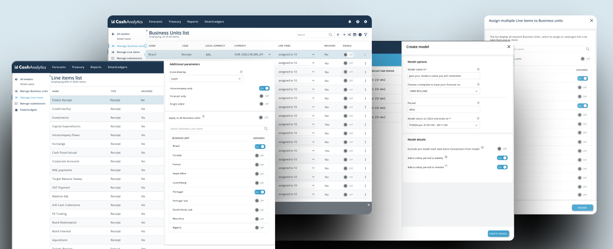

A customer inquiry regarding the complexity of handling Line Items settings in our system highlighted various opportunities for redesigning our management areas.
Effective model management is essential for our Cash forecast and analysis software. However, our current model management interface and flow encounters usability challenges, especially concerning the management of line items and business units within models/templates (of forecast sheets). As a sole Product Designer in my current company, I was entrusted with the responsibility for this and saw the opportunity of improving other areas and enhancing the user experience in general, simplifying workflows and boosting productivity for our users.
Managing models was time consuming and demanding — users navigated multiple screens to activate, archive and reassign items, and those pages were also tangled with downstream tasks. I broke the problem into three areas:
Activating, deactivating, archiving and reassigning line items, business units and currencies each lived on separate screens, forcing users to jump between pages to complete a single task.
Several management pages predated the Design System, with visual clutter and inconsistent patterns that increased cognitive load and eroded trust in the data.
Item management was tightly coupled to changing templates, updating models and reading reports — yet these connected journeys were never mapped, making changes risky.
Through stakeholder interviews and support-ticket analysis, three recurring insights shaped the direction of the redesign.
Analysts lost context switching between separate pages to manage a single line item.
“By the time I've found the right screen, I've forgotten what I came to change.”
Because item changes rippled into templates and reports, users hesitated to make edits.
“I never know what else this is going to affect downstream.”
Inconsistent, cluttered layouts made the numbers feel less reliable to finance users.
“If the page looks old, I start doubting the data behind it.”

.jpg)

Discussions with stakeholders and users revealed several pain points and considerations:
The strategy for this project involved a collaborative approach, beginning with extensive meetings with key stakeholders such as the Customer Success Team, Product Manager, and Tech Support. These individuals provided valuable insights into the existing challenges and opportunities within the model management system.
Following these discussions, I led efforts to map out the basic flow for activities associated with line item and business unit management. By understanding the current processes in detail, we identified critical points where the flows intersected, highlighting potential areas for improvement.
I prioritized iterative enhancements that could be implemented without disrupting ongoing development in other areas or requiring extensive workforce resources. Instead of complex overhauls, I would focus on making targeted adjustments to streamline workflows and enhance user productivity while minimizing disruption to existing operations. Moreover is valid to mention that all changes would have to be aligned with the on developing Design System and provide future scalability.
Metrics of usage were collected to allow a comparison later (Average time to perform assignments; Number of clicks required; System Usability Scale (SUS); Task success rate for first-time users; Customer support tickets related to model management;
It was possible to: Streamline the user experience by minimizing the need to jump between pages or open new tabs, ensuring users maintain context throughout navigation. By doing so, we significantly reduced journey times and addressed user complaints regarding system complexity. Additionally, we modernized outdated pages to align with the company's Design System patterns.
Our efforts included reducing visual clutter, standardizing colors and images in accordance with the Design System, and restructuring the architecture of certain pages. We revamped menu layouts and functionality, as well as updated labels and text to use clearer language that resonates better with users.
12 clicks across 3 screens to assign a line item to a business unit.
4 clicks in a single, in-context panel — no page jumps.
Archiving an item meant navigating away and losing the model context.
Inline archive with confirmation, keeping the user on the same view.


Assigning a line item dropped from 3.2 min to 42 sec.
Updating items across 5 business units fell from 18 min to 4.5 min.
Archiving a line item went from 12 clicks to 4.
System Usability Scale improved after the redesign.
Task success for new users rose from 73% to 92%.
Model-management support tickets dropped the next quarter.
User errors during line item management decreased by 58%, and the streamlined flows removed the need to jump between pages or open new tabs — keeping users in context throughout the journey.
The Design System was being built in parallel, so patterns kept shifting under me.
What I didPrioritised consistency over personal preference and fed reusable components back into the system.
Older pages needed migrating to React, which lengthened delivery time.
What I didSequenced low-disruption, iterative changes so value shipped without blocking other work.
Customer Success, Product and Tech Support each had different priorities.
What I didMapped the shared flows first, giving everyone a single source of truth to align on.